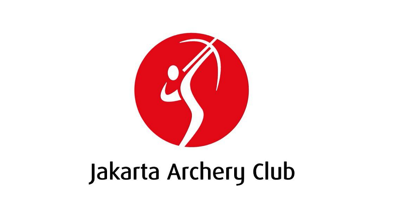

Club ini diprakarsai oleh Tri Danang Waskito seorang atlet panahan yang kemudian menjadi pelatih.
Lokasi: Gelora Bung Karno Jl. Pintu 7.
Waktu latihan: Senin, Rabu, dan Kamis Jam 10.00-15.00.
Sabtu dan Ahad Jam: 08.00-18.00.
Durasi latihan 2 jam dan Quota 1 sesi 20 orang
Contact Person: 08568771313(Coach Danang)